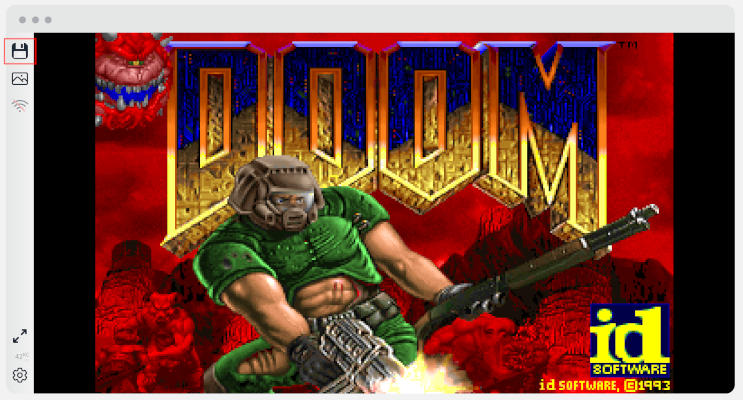

Save/Load
js-dos supports saving and restoring game progress. You can play the game from time to time without losing progress. It works automatically while you don't change the bundle URL.
This feature works by dumping file system changes into a second bundle and using it to override the original file system on the next load. You can read more about the implementation here.
The Save/Load feature works automatically whenever the player presses the save icon. However, the game itself should support storing progress.

Save and Load in DOS Games
js-dos offers you a great and free service to play DOS games. Many DOS games are fantastic and can provide hours of gameplay. Obviously, it's not possible to finish these games in one session. Luckily, js-dos fully supports saving and restoring game progress.
First things first: DOS games were developed at the beginning of the gaming industry, and typically they do not have auto-saving or continuous saving while you play. You should explicitly save your progress within the game.
To save your progress, you need to follow the game's original saving mechanism, as js-dos emulates the DOS environment, allowing games to run as they did on original hardware. Here's a general approach you might find helpful:
Access the Game's Save Menu: Most DOS games have an in-game save option. This is usually accessed through the game's main menu, which can often be brought up by pressing the "Esc" key or a specific function key (e.g., F1, F2, etc.). From there, navigate to the save game option using the arrow keys and select it by pressing "Enter".
Use In-game Commands: Some games, especially text-based or adventure games, allow you to save by typing in a save command. Common commands include "save", "save game", or something similar. After typing the command, you might need to specify a file name for your save game.
Check the Game's Manual: Since the saving process can vary significantly from one game to another, it's a good idea to check the game's manual or any available help files. These documents often include specific instructions on how to save your game. Manuals can sometimes be found online or within the game's folder on dos.zone.
Keyboard Shortcuts: Some games implement quick save/load features through keyboard shortcuts. Common shortcuts include pressing keys like F5 to save and F9 to load (though these can vary). Try to look for these shortcuts in the game's manual or settings menu.
Emulator Options: dosbox-x also offers specific options for saving your game state. This feature saves the exact state of the emulator, allowing you to resume from the exact moment you saved, regardless of the in-game save system. Look for this option in js-dos sidebar. (dosbox-x only!)
Your game progress has been successfully saved! To load it, simply follow the same load mechanism provided by the game.
Keep saves between page reload
After saving the game using the game's built-in mechanism, you should explicitly inform the JS-DOS player that the game saves have been updated and that you want to store them persistently (in the cloud, IndexedDB, etc.). To do this, you must click the "diskette" button in the JS-DOS sidebar. If you do not do this, your progress will be immediately lost upon restarting the page.
When your saves are successfully stored in persistent storage, you will receive a green toast notification. Now, you can reload the page, and your saves will be retained!
Disable saves
You can also completely disable saves in js-dos. To do this, create a Dos instance with the following settings:
Change the key for bundle
By default, for each URL a companion ending with .changes is created. In most cases this works correctly, but sometimes you need more control over the save key. You can change it as follows:
Implementing custom storage
You can also implement your own mechanism for storing game progress. To do this, you need to pass a configuration object with storage settings in the DOS options:
Retrieving current changes
You can retrieve current local changes by calling getLocalChanges(key).
If you override the save key with fsChanges.urlToKey, pass that key to getLocalChanges().